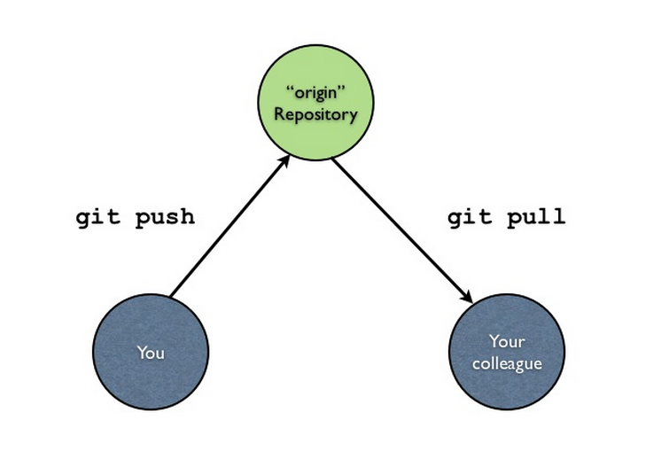
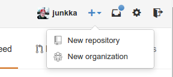

Introduction to Git
Johan Junkka
Git
- A distributed version control system
- Created for collaborative coding
- Full local repository, independent of network
- Fast and scalable
History
Initaly created by Linus Torvalds in 2005 - now maintained by Junio Hamano.
Google Tech Talk: Linus on Git
Definitions
Working directory
The project directory containing all project files and folders you which to have under version control.
Repository
The .git directory where the history of your project is stored.
Commit
A snapshot containing the state of the project at a certain point.
HEAD
Refers to the commit currently checked out in the working directory.
The Git model

The Git model
 http://www.slideshare.net/lfittl/introduction-to-git-4642204
http://www.slideshare.net/lfittl/introduction-to-git-4642204
Set up
Need: git and a GitHub or BitBucket account
Don’t forget: 5 free private repos via GitHub Academic account
Optional: Visual git tool, such as Rstudio, GitHub for Mac
Install
Mac with homebrew brew install git
Linux sudo apt-get install git
Config
git config --global user.name "junkka"
git config --global user.email johan.junkka@gmail.com
git config --global core.editor vim
# check config
git config --listSSH key
Easiest way to use with a remote server. Instructions
ssh-keygen -t rsa -C "johan.junkka@gmail.com"
cat ~/.ssh/id_rsa.pub Copy ssh key -> Login to service -> new ssh -> paste ssh key
New local repo
git initInitialized empty Git repository in /home/johan/rproj/git-pres/.git/git statusOn branch master
Initial commit
Untracked files:
(use "git add <file>..." to include in what will be committed)
README.md
assets/
index.Rmd
output/
render_pres.R
nothing added to commit but untracked files present (use "git add" to track)First commit
git add README.md
git commit -m "first commit"Check status
git status
git log
# Overview
git log --stat.gitignore
Excludes files and directories from git
.gitignore example:
.Rhistory
temp/echo 'output/' > .gitignore
# Add all files
git add -A
git commit -m "initial all"
# View commit history
git log
# View all currently tracked files
git ls-tree -r master --name-onlyAdd remote repo

Add remote to local repository
git remote add REMOTE-NAME REMOTE-ADRESSgit remote add origin git@github.com:junkka/git-pres.gitPush
First remote push
push all commits with -all
set remote as main upstream repository with -u
git push -u origin --allMake changes, commit and push
# Update file
git commit -am "update"
git push origin masterDiff
To view changes between current version and last commited or between versions. Best to use a diff tool. Such as vimdiff, meld, sublimerge etc. Also included in most GUI such as RStudio
For this example we use meld which we set up from the terminal instructions
sudo apt-get install meldNeeds a small startup script
#!/bin/bash
meld "$2" "$5" > /dev/null 2>&1Add as default diff tool
git config --global diff.tool /usr/local/bin/git-diff.shNow
git difftool filenameReset, revert or “undo”!
Accidentally pushed half your harddrive to github?
Panic!
- Delete public repo on github
- remove .git/ folder
Only last commit
Force github to reset!
git reset 93c1d75a8 --hard #commithash
git push -f origin # as in forceAll together
More
git clone REPOADRESS = start from an existing project
git checkout -b BRANCH = start a new branch
git merge BRANCH = merge changes from another branch into current
git checkout BRANCH = checkout an existing branch
git checkout HASH = checkout a previous commit
git tag v1.0 = add tag to last commit, easier to find
git push origin --tags = because git doesn’t push tags automatically